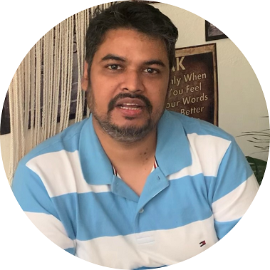

|  |
Sanjay KumarSoftware Architect, Cadence Design Systems |
Hi I am Sanjay, working as software Architect at Cadence India, Bangalore. I have extensive experience in developing SOC Virtual and Hybrid platforms for enabling early software development and performance tuning, developing infrastructure for IP
modeling, IP models like DMAs, Interconnects, full system integration, verifications and release to end customers.
I have experience in wide variety of techniques used for modeling Virtual platforms starting from C/C++ based SSI(Simulation System Interface) to industry standard SystemC and TLM2.0 I have also developed several transactors to interface Memories
like DDR4/5, LPDDR4/5 with a fast and coherent systemC memory, interface DSI display host controller with a virtual DSI device, interface CSI2 Camera device to CSI Host controller running on RTL side.
I am a computer science graduate from National Institute of Technology, Trichy and I have a MS degree from BITS, Pilani in microelectronics. My areas of interest include SystemC and TLM methodologies,Hybrid Emulation and Simulation, programming
languages, Design patterns, Algorithm Design.
| Skill | Expetrise Level |
|---|---|
| languages:C/C++/SystemC | ⭐⭐⭐⭐ |
| Python/TCL/HTML/Javascript | ⭐⭐⭐ |
| SystemC Modeling & TLM2 | ⭐⭐⭐⭐⭐ |
| EDA Verification Tools | ⭐⭐⭐⭐ |
| Virtual Platform Integration | ⭐⭐⭐⭐ |
| AMBA-PV Buses | ⭐⭐⭐ |
| Simulation Infrastructure Development | ⭐⭐⭐⭐ |
| Hybrid transactor development | ⭐⭐⭐⭐ |